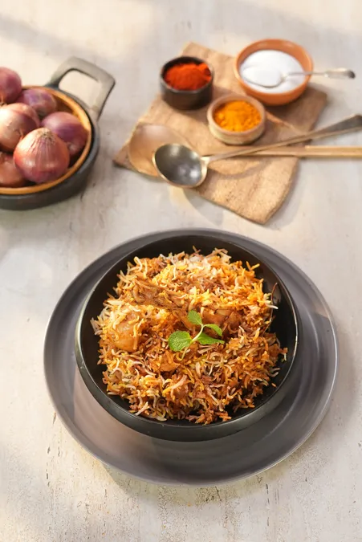

Zurbian is a fragrant, slow-cooked Yemeni rice and meat dish similar to biryani. It combines tender, spiced meat (lamb or chicken) and potatoes with fluffy basmati rice,
beautifully infused with saffron
Heat oil in a large pot. Add sliced onions and fry until they are golden brown. Remove and set aside half of the fried onions for garnish.
In a food processor, blend the remaining fried onions with the yogurt, ginger, garlic, and the ground spices (turmeric, coriander, cumin, and chili powder)
until it forms a smooth, thick paste.
Marinate the meat with the yogurt-onion paste and salt for at least 2 hours. In a large, heavy-bottomed pot, heat ghee, add the whole spices,
and sear the marinated meat on medium heat for 5 - 10 minutes
Add a splash of water, cover the pot tightly, and let the meat slow-cook on low heat for about 30 - 45 minutes.
Place the potato halves into the pot and cook for an additional 20 - 25 minutes until the meat and potatoes are tender
In a separate pot, bring the saffron-infused water to a boil. Add the soaked basmati rice and cook until tender,
stirring occasionally.
Layer the partially cooked rice evenly over the cooked meat and potatoes. Drizzle the saffron water and melted butter
(or ghee) over the rice. Top with the reserved crispy fried onions.
Cover the pot tightly with aluminum foil and a heavy lid. Place on the lowest flame (or a tawa/griddle) and
let it steam/dum for 20 - 25 minutes.
Gently fluff the Zurbiyan with a fork, ensuring the meat and potatoes remain intact. Serve hot with raita or salad.